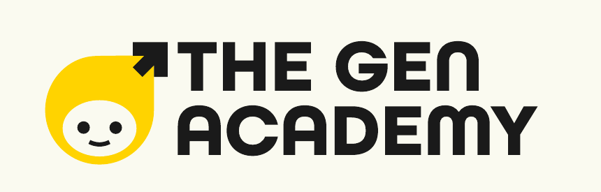

Hello,
October cohort members!
Find your people. Follow the sun. Each Glo marker is a cohort member - zoom in, say hello, and discover who’s building nearby.
- 333
- Cohort members
- 203
- Mapped places
- 17
- Countries

Mastering Agentic AIFind your people. Follow the sun. Each Glo marker is a cohort member - zoom in, say hello, and discover who’s building nearby.